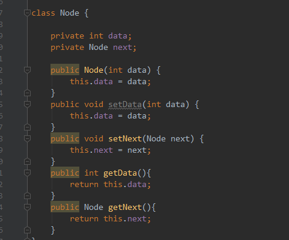
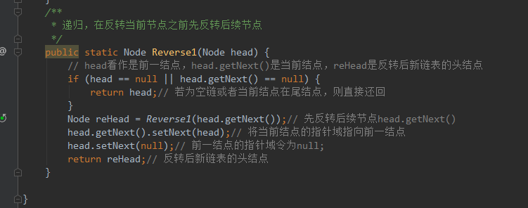
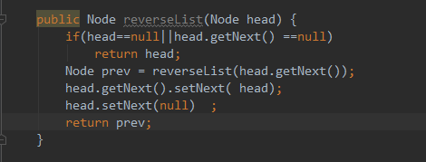
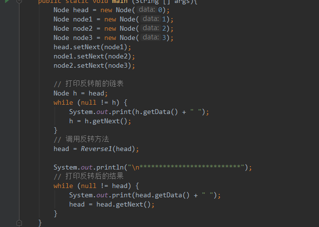

Reverse Linked List反转链表
问题
Reverse a singly linked list.click to show more hints.Hint:A linked list can be reversed either iteratively or recursively. Could you implement both? Subscribe to see which companies asked this question
1.0 链表定义

1.1 递归实现

1.2 非递归实现

1.3 测试

参考文章：
https://blog.csdn.net/guyuealian/article/details/51119499
https://www.cnblogs.com/tina-smile/p/4878983.html